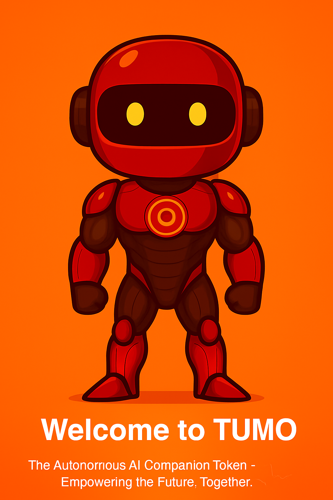

Welcome to TUMO
The Autonomous AI Companion Token —
Empowering the Future, Together.
🌐 About TUMO
Website:
https://tumoofc.github.io
Token Utility: Click2Earn, Governance, DAO
Vision: To become a time-saving AI companion, not a replacement.